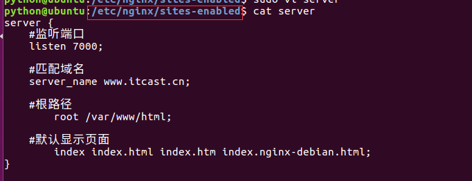
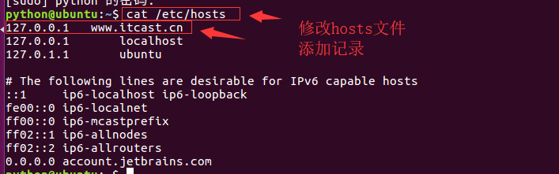
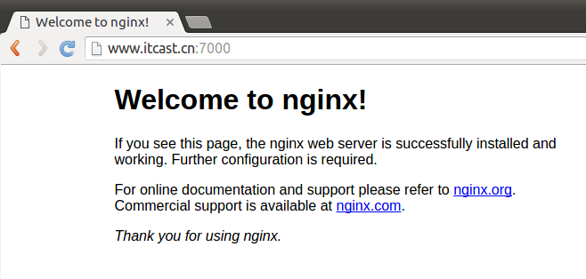

Server常见配置属性
server {
server_name www.itcast.cn;
listen 80;
root /var/www/html;
index index.html index.htm index.nginx-debian.html;
}
server配置段最重要的属性是listen和server_name。它们都是用于匹配并处理请求的。
listen属性
作用：定义Server监听的ip和port，当ip/port匹配时候才进行下一步匹配
表现形式：
| 形式 | 描述 | 示例 | 完整示例 |
|---|---|---|---|
| IP:Port | 地址精确表示样式 | listen 10.10.10.10:99 | listen 10.10.10.10:99 |
| IP | 自动监听IP:80地址 | listen 10.10.10.10 | listen 10.10.10.10:80 |
| Port | 自动监听全地址:Port | listen 99或[::]:99 | listen 0.0.0.0:99 |
| default_server | 自动使用默认的地址 | listen default_server | listen localhost:80 |
使用原则：
首先将所有样式补全成IP:Port,然后匹配,匹配Server多，那么接着使用Server_name匹配
server_name属性
作用：定义Server监听的域名，当域名匹配时候才进行下一步操作
表现形式：
| 格式 | 完整样式 | 前缀正则样式 | 后缀正则样式 | 禁止非法域名或IP |
|---|---|---|---|---|
| 形式 | www.example.com | *.example.com | www.example.* | _ |
使用原则：
优先使用完整样式,然后使用前缀正则样式,最后使用后缀正则样式,如果正则样式相同的时候,匹配最长,否则就走非法规则。
非法域名/IP，表示请求到该主机上一个不存在的IP或者域名
root属性
作用：定义Server相应请求的html文件所在路径
表现形式：
root /var/www/html;
index属性
作用：定义响应请求后返回的文件名称或格式
表现形式：
index index.html index.htm index.nginx-debian.html;
实例--基于域名的虚拟主机
1。在/etc/nginx/sites-enabled目录下创建server配置文件
server {
#监听端口
listen 7000;
#匹配域名
server_name www.itcast.cn;
#根路径
root /var/www/html;
#默认显示页面
index index.html index.htm index.nginx-debian.html;
}

2。修改/etc/hosts文件，添加记录
127.0.0.1 www.itcast.cn

3。检查nginx配置后重载服务
/usr/sbin/nginx -t
systemctl reload nginx
4。测试访问 www.itcast.cn:7000
